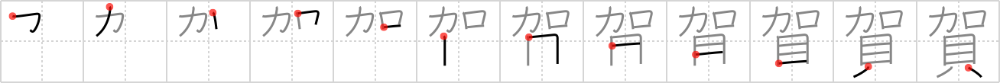

賀
← →
congratulations

Reading:
On-Yomi: ガ
Heisig story:
Add . . . shells.
Koohii stories:
1) [Raichu] 18-4-2007(220): When someone at work gets married, you pass around an envelope to which you add some money and a card which you sign with your congratulations.
2) [eltjopoort] 9-6-2008(122): Congratulations are so much better when you add money to them.
3) [wrightak] 30-5-2006(61): I was a bit shocked when I learnt that it's tradition in Japan to add around 30,000 yen (shells) or more to a wedding congratulations card.
4) [bihzad] 25-2-2008(31): Congratulations on winning the lottery! We'll add the clams (money) to your account.
5) [fuaburisu] 10-10-2005(7): You like it when shells (money) are added to your “congratulations cards”.